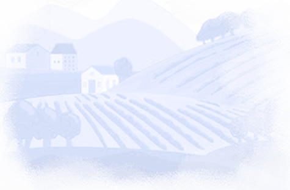
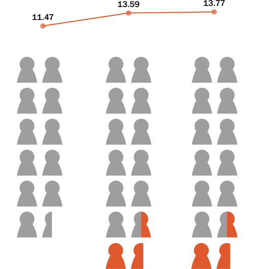
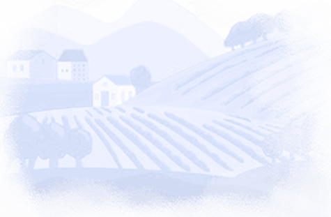
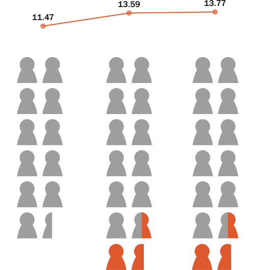
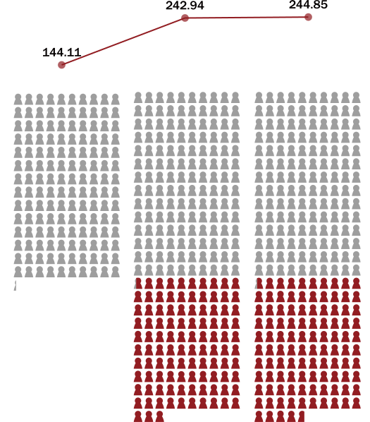

The visualizations are based on Nikole Hannah-Jones's article published on the New York Times on June 9, 2016: Choosing a School for My Daughter in a Segregated City - How one school became a battleground over which children benefit from a separate and unequal system. Click to view the full version of Nicole's work.
Visualization #1:
How are American schools segregated in the 21st century?
Description
This interactive visualization is a geographical presentation of the segregation ratio marked by different colors in U.S. schools in 2015-16 school year. 157 years after the civil war and 68 years after the Supreme Court's landmark Brown v. Board of Education ruling, we may suppose that segregation in U.S. education systems is no longer a problem. However, this visualization says: it's not true. There is another question here: is the North more civil than the South in education, as most people would assume?
Most Segregated States
| District Of Columbia | 72.80% | S |
| New York | 69.87% | N |
| Illinois | 66.34% | N |
| Ohio | 66.21% | N |
| Tennessee | 64.65% | S |
Most Integrated States
| Hawaii | 31.26% | W |
| Wyoming | 35.41% | W |
| Montana | 36.01% | W |
| Vermont | 36.28% | N |
| North Dakota | 38.54% | N |
🖱️ Click A State
To Start!
Segregation Ratio:
"Intensely" Segregated School #:
Public School (%):
Total School #:
Footnote: the Segregation Ratio
I adopted the segregation ratio defined in the article: When Is a School Segregated? Making Sense of Segregation 65 Years after Brown v. Board of Education and made some modifications.
The equation used in this visualization is:  ,
,
where indexes schools, is the share of school 's students that are Black or Hispanic; is the share of students that are Black or Hispanic in the state as a whole. Measured using the dissimilarity index, segregation can be intepreted as the schools that need to change to create a perfectly integrated school system, relative to the share that would have to change to achieve the same goal but starting from a perfectly segregated school system.
References
Choosing a School for My Daughter in a Segregated City: How one school became a battleground over which children benefit from a separate and unequal system National-level data on all public and private schools When Is a School Segregated? Making Sense of Segregation 65 Years after Brown v. Board of EducationVisualization #2:
Segregated education in China: a bird’s-eye view of residential segregation
Education Segregated by Geography
Kindergarten, Beijing, 2017
City # Township # Village #
Kindergartens
City # Township # Village #
Pupils
# of students you'll give individual attention to, if you are a teacher in ...
City
Township
Village
 



# of students you'll give individual attention to, if you are a doctor in ...
City
Township
Village

Education, the Hukou System, and Segregation
The proposal the author Nicole mentioned in the article that “All things being equal, with no history of discrimination, it might well be desirable to assign pupils to schools nearest their homes” is what is carried out in China now. However, given the dual structure of urban-rural separation and the ensuing residential inequity, the effectiveness of this policy remains uncertain and debatable. Unlike schools in America, public schools in China have better educational resources and lower tuitions compared to private schools. According to this New York Times article about kindergarten school choice in Beijing, if parents want to send their children to public kindergartens in their neighborhood, they should provide four certificates, for example: “Beijing Xicheng District Household Registration Certificate, Xicheng District Liren Street Community Property Certificate, Only Child Certificate, Birth Certificate”. The first two certificates ensure the child’s hukou, i.e., geographical privilege.
The Chinese government promulgated the Regulations of the People's Republic of China on Hukou Registration in January 1958, formally establishing the Hukou system of household registration and marking the beginning of strict control over the free movement of population and free migration in China. The initial motivation of setting up the Hukou system is to achieve progressive urbanization. Although China is releasing restrictions on settling in cities other than individual mega-cities in recent years, such settlings are still highly determined by individuals’ socioeconomic status and education level, which induces a closed-loop in school segregation. Till now, teaching quality in urban and public kindergartens is still significantly higher than that in rural and private ones. As of 2009, of the 70 model kindergartens in Beijing, 52 (74%) were in the six urban districts (Dongcheng, Xicheng, Chaoyang, Haidian, Fengtai, and Shijingshan).
References
北京市数据开放平台：幼儿园基本情况（2017年）Beijing Open Data Platform: Basic Information on Kindergartens (2017)
如何挤进北京公立幼儿园How to squeeze into a public kindergarten in Beijing
中国户籍制度的演变逻辑：适应经济社会形势渐进放宽人口流动控制The evolutionary logic of China's household registration system: adapting to the economic and social situation by progressively relaxing the control of population movement